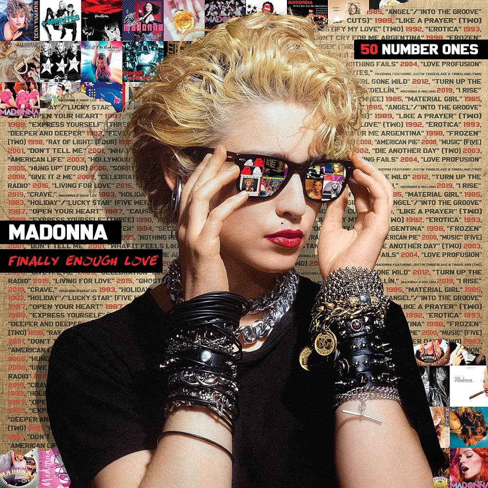

A Moda Sempre Foi Discurso
- Antes mesmo do termo 'Moda' surgir, as roupas já diziam muito sobre quem as vestias. Muito antes de serem vistas como combinações criativas e algo feminino, as roupas serviam para mostrar posição social, riqueza e bens, acreditem ou não, as cores cintilantes, tecidos rebuscados e maquiagens chamativas pertenciam aos reis das cortes europeias, que usando seus estilos excêntricos demonstravam sua importância e poder.
A Moda passou, passa e passará por diversas mudanças conforme os anos. Hoje em dia, sem querer, passamos a ver a moda como algo distante e de um nicho específico; Mulheres e alta sociedade. Essa visão nos tira a oportunidade de apreciar versatilidade dela, a moda está presente naqueles que usam dela para se expressar, seja com as altas-costuras ou roupas usadas. Aqueles que não sentem vergonha de demonstrar quem são vivem a moda todoas os dias.
A Moda Lembra
Na foto do meu primeiro post, conseguimos ver a atriz Rachel Zegler vestida de A Execução de Lady Jane Grey, uma pintura de 1833 feita pelo artista Paul Delaroche. Na pintura, é possível ver uma mulher com os olhos vendados enquanto um homem à conduz. Por trás da linda pintura, uma história tenebrosa. A jovem Jane foi executada em uma guilhotina aos 17 anos, uma jovem convicta, poliglota e extremamente intelectual que teve sua história apagada pela ambição dos homens ao seu redor (seu pai e seu sogro). 400 anos depois, a atriz usou da moda pala relembrar todos nós do legado de repressão que Jane e diversas outras mulheres passaram e passam até os dias atuais.
Ser Garota

"Girls can wear jeans And cut their hair short Wear shirts and boots 'Cause it's OK to be a boy But for a boy to look like a girl is degrading 'Cause you think that being a girl is degrading But secretly you'd love to know what it's like Wouldn't you What it feels like for a girl?" Em 2001, Madonna criticava a visão masculina sobre "coisas femininas" na letra de What It Feels Like For a Girl. Como ela mesma cita na musíca, para um garoto, ser uma menina é algo degradante, isso é fruto de um machismo que vem enraizado na sociedade a muitos e muitos anos, e como isso entra na moda? A moda é vista como um nicho separado para as mulheres, quantos homens você conhece que consomem conteúdos sobre moda? ou até mesmo artistas feminininas? Todos nós crescemos com essa ideia de que se parecer com uma garota significa fragilidade, sensbilidade e futilidade, caracteristicas mais humanas do que só femininas, se é que me entende. A moda serve como um caminho de liberdade para todos aquels que perderam anos de suas vidas fingndor ser alguém que não são por medo da repressão. Todos nós somos vitimas.
Mais do que tendência, uma forma de expressão.
Moda vai muito além de seguir tendências. As roupas que escolhemos dizem muito sobre nossa personalidade, nosso humor e até nossas referências. O estilo mais interessante não é o mais caro ou o mais popular, e sim aquele que faz sentido para quem você é.
Você percebe a moda no seu dia a dia?
Como eu ja disse aqui nesse blog, nós temos essa visão sofisticada da moda, e assim deixamos de ver ela no nosso cotidiano. Me digam, seguimores, vocês percebem a moda em volta de vocês? Se não, passem a observar mais as pessoas ao seu redor, a criatividade em usar certas peças, a combinação de cores.. Talvez você até ache sua inspiração ^^